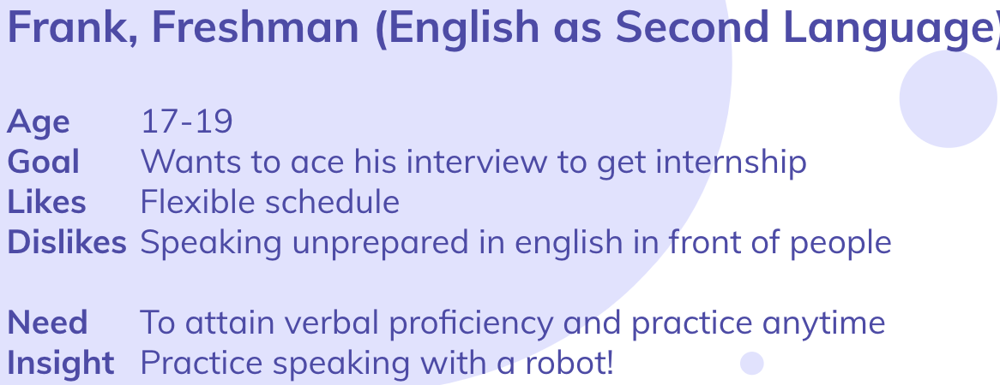
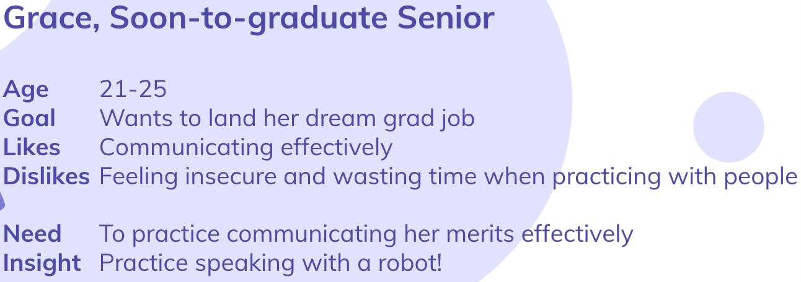

Izen Brast Huang

Undergraduate Student
Studying Computer Engineering
at Hong Kong University of Science and Technology
Cirriculum Vitae (CV)
Last updated Sep 1 2019
Outline
Huamn Robot Interaction
To explore solutions through interaction with robots
Introduction
In this project, we looked at how we can use the Softbank Pepper robot to provide solutions in the education sector. This article will be divided into 3 main parts: 1. How we used the double diamond method to focus in on a solution, 2. Once we decided upon a solution, how we built our prototype, and finally, 3. reflection on the project.
Discover: gaining insight into the problem
To better understand the current problems in education and how our robot could address these problems, we sat down and brainstormed. We realized one major advantage that a robot has over other existing solutions (e.g. educational apps) is its ability to mimic human gestures (ability to mimic hand gestures, blinking of eyes), which gives the users a semblance of interacting with a human. We concluded that Pepper would be best used as replacement-humans, for instances in which the user for whatever reason, cannot interact with a real human.
Defining: the area to focus upon
The problem areas we brainstormed were: academics, life/social skills, hobbies, and health. We decided upon the academics field because we thought it would be more realistic that academic institutions would have a few of these robots to rent out, as opposed to individual robots in the homes for personal use. Furthermore, we thought using Pepper as a replacement for tests & interviews in particular were the most applicable to us, as many of us are in the process of job search and found an interview robot the most applicable.
All the problems we brainstormed within academics shared the same thread of the need to practice speaking with a human, so that became the specific problem we decided to address.
Develop: potential solutions
We came up with 3 scenarios in which pepper could address the problem. Then, we divided our team into 3 groups to gauge user feedback on each of these solutions.
Albert and I were responsible for the scenario of a user needing to practice a foreign language in front of a human evaluator for a standardized test. Below is a storyboard we showed users to get feedback.

Storyboard of robot as solution to practicing standardized speaking
The feedback for our storyboard was mixed. The pros of our solution were:
- Very accessilbe, can be used anytime
- A great step towards praciticing in front of people
The cons were:
- Robot is a not a good indicator to how humans will react (robot limited in how well it can imitate human reactions, physical movements, etc)
Focusing in: on a solution
In the end, our group decided to focus on the scenario of the need to practice interviews for a few reasons:
To ensure that our design is user-centered, we constructed the following POVs:
- We do not always have friends or advisors regularly available to practice interview skills with
- Interviews tend to have set/predictable questions, which is feasible for Pepper to do
- A robot with limited human imitation (blinking eyes, hand gestures) is still better than an “interview practicer” app
To ensure that our design is user-centered, we constructed the following POVs:
Point-of-Views

POV #1
POV #2
Having the defined POVs allowed us to better ideate what kind of features we wanted our robots to have, and ensure that our solution was user-centered.
Prototype
Our prototype was limited by 2 main factors:
- The POVs (user needs)
- The limitation of robot features/technology
Given the POVs and limitations of the Pepper robot, we wanted to allow the user to feel:
1. Feel Like Talking to a Real Interviewer
By having Pepper perform basic head nodding, blinking of eyes, and hand gestures, the user feels like he is talking to a real interviewer.
2. Have a Relatively Realistic Set of “Typical Interview Questions”
Pepper utilizes speech recognition to detect keywords, such as “interview”, and follows up with appropriate set of questions.
3. Practice Conducting Himself in a Professional Manner
We wanted to have Pepper give feedback on the user’s way of conducting himself. Through emotion recognition, Pepper can remind the user to be more enthusiastic and engaging. Pepper’s eye contact detection reminds the user to maintain strong eye contact throughout the interview. Lastly, simple sound peak detection notifies the user if he is speaking too loud/too soft.
Below is a short video demonstration of how Pepper can serve as practice for an interview:
Personal Contribution
We all had a relatively equal share of contribution towards this project. I was specifically involved in all of the brainstorming, story boarding, as well as initial exploring of Pepper’s functionalities.
While was not the one who coded Pepper’s program, I was there for testing and giving suggestions/feedback.
Reflection on the Project
This project allowed us to explore the functionalities of robots, and their potential in addressing some of the problems found in education. One important distinction we kept in mind throughout this project was how robots differ from other solutions. A robot as a human replacement is essential because it can replicate human movements. In specifics of our project, we could have built an App that listens to the user’s responses, and even use camera vision to detect facial expressions/emotions. However, it would still not address the need to talk to a “person” with blinking eyes, head movement, and hand gestures.
Pepper as an interview practice robot addresses the need to have a relatively realistic, readily available practice interviewer. While there are many limitations and flaws in our current model, I believe with further development is necessary before it could be used as a rent-able practice device to be used in University environments.
Personal Views on HRI
Personally, I think the gap between humans and robots is still far too wide for robots to completely replace humans, especially for practice interviews. With the current technology, Pepper is better suited for more routine roles such as a sales clerk replacement, or a “store welcomer” to greet customers.